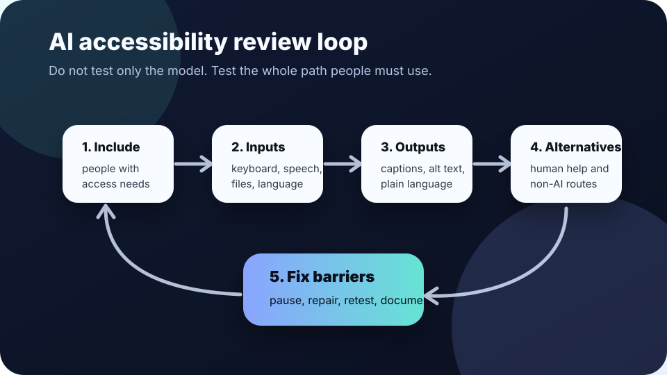

AI accessibility
AI accessibility review: check the whole path before people depend on it.
Use this when an AI tool will explain, summarize, screen, route, translate, transcribe, tutor, recommend, or decide something people must use. Accessibility is not only a screen-reader test of one page. It is whether people with different bodies, languages, devices, assistive technologies, and contexts can complete the task without being shut out.
The short answer
An AI accessibility review asks: Can people perceive the AI output, operate the interface, understand what happened, correct problems, and use a non-AI or human-supported route when the tool fails?
The World Wide Web Consortium describes web accessibility as designing websites, tools, and technologies so people with disabilities can use them. WCAG 2.2 organizes accessibility around content being perceivable, operable, understandable, and robust. For AI systems, those ideas need to cover the full workflow: prompts, uploads, speech input, generated text, images, captions, summaries, confidence cues, error recovery, and human support.

When to use this checklist
Use it before AI becomes required
- a chatbot replaces a form, phone line, help desk, intake worker, or search page;
- AI transcription, summarization, translation, or captioning becomes part of meetings, classes, services, or records;
- an AI tool scores, flags, routes, prioritizes, or recommends next steps for people;
- staff are asked to rely on AI-generated reports, dashboards, images, slide text, or emails.
Do not narrow the question
- Accessibility is not only color contrast or alt text.
- An AI output can be fluent but inaccessible if it is too dense, lacks captions, cannot be corrected, or traps people in a bot loop.
- Legal duties differ by place and sector. This page is practical education, not legal advice.
Six checks for an accessible AI workflow
- Include people with access needs early. Test with people who use screen readers, keyboard navigation, captions, magnification, speech input, switch devices, plain language, translation, low-bandwidth devices, or support workers. Do not wait until launch to discover the path excludes them.
- Test every required input. Can the person type, paste, speak, upload, edit, pause, review, and submit without a mouse? Are time limits adjustable? Are files, scanned documents, IDs, audio, and images handled in accessible ways?
- Test every AI output. Generated text, images, charts, audio, transcripts, summaries, forms, and recommendations need accessible names, captions, transcripts, alt text where useful, readable structure, and enough context to understand uncertainty or limits.
- Make errors recoverable. People need a way to edit prompts, correct source records, undo selections, retry with help, challenge summaries, and reach a human. Do not make a disability-related error look like user noncompliance.
- Provide an equivalent alternative path. If AI is optional, say so. If the AI path fails, offer a phone, email, paper, in-person, or human-supported route that is not slower, hidden, punitive, or lower quality.
- Document barriers and fixes. Record what was tested, who was included, what failed, who owns the fix, and when the workflow will be retested. Repeated accessibility failures should trigger risk review, not one-off support tickets.
If the only way to get service is through a chatbot that cannot handle assistive technology, plain language, captions, or human escalation, the AI workflow is not ready for consequential use.
A quick meeting script
Use this before approving, buying, or expanding an AI tool.
Before we rely on this AI workflow, who has tested it with keyboard-only use, screen readers, captions or transcripts, magnification, plain-language needs, non-native speakers, low-bandwidth access, and people who need a human-supported route?
What are the required inputs and outputs? Which ones have accessibility evidence? What happens when the AI gives an inaccessible, incorrect, or confusing result?
If a person cannot use the AI path, what equivalent alternative gets them the same service without penalty? Who owns fixes, and when will we retest?
Warning signs
- The vendor says “the model supports accessibility” but cannot show workflow testing.
- The team tested only with fast internet, modern laptops, mouse users, and fluent English text.
- AI-generated images, charts, or PDFs are posted without useful text alternatives.
- Summaries become official records even when people cannot review or correct them.
- The fallback is “contact support,” but support staff cannot override the AI path.
- Accessibility bugs are treated as edge cases instead of launch blockers for required services.
A good accessibility review improves the product for everyone: clearer language, better error recovery, stronger human escalation, and fewer hidden exclusions.
Sources and further reading
- W3C Web Accessibility Initiative — Introduction to Web Accessibility
- W3C — Web Content Accessibility Guidelines (WCAG) 2.2
- W3C WAI — WCAG 2 at a Glance
- NIST — AI Risk Management Framework
- U.S. Department of Justice — Guidance on Web Accessibility and the ADA
- European Commission — AI Act overview
This guide is practical education, not legal, procurement, disability-rights, employment, medical, housing, benefits, or compliance advice. For regulated services or high-stakes decisions, involve qualified accessibility, legal, disability-rights, and affected-community expertise.